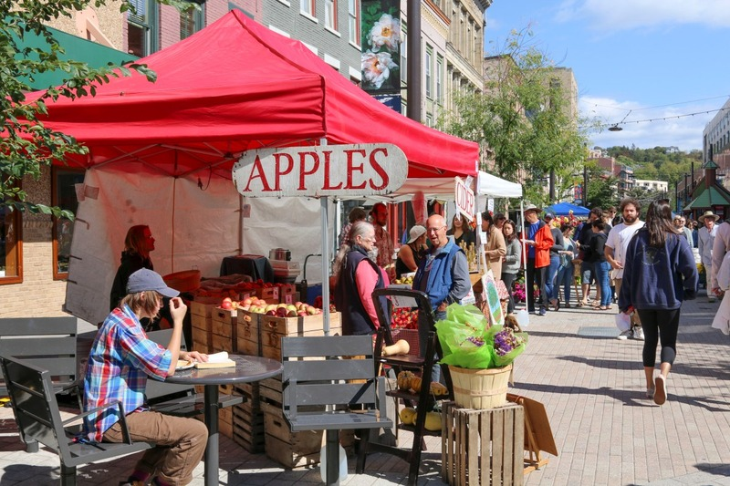

Attend the 42nd Annual Apple Fest September 27-29!
The 42nd Annual Apple Harvest Festival presented by the Downtown Ithaca Alliance this fall, September 27th - September 29th.
The Apple Harvest Festival, held annually in downtown Ithaca, is a beloved community event celebrating the bounty of the fall season. Featuring local farmers, artisans, and vendors, the festival offers a vibrant array of delicious apple-themed treats, fresh produce, unique crafts, and live entertainment. Visitors can enjoy farmstand fresh apples, seasonal baked goods, diverse food trucks, and a craft fair showcasing regional artisans. Live music and entertainment add to the festive atmosphere, while downtown shops offer great apple-inspired products. This family-friendly event draws visitors from near and far to savor seasonal flavors and experience the charm of Ithaca in autumn.
Apple Harvest Festival will host plenty of farmstand fresh apples and produce, delectable apple and seasonal baked goods, a variety of food trucks offering tasty bites, and a craft fair with artisans from around the region. There will also be live music and entertainment, plus a cider trail to enjoy refreshing cider in store and plenty of great apple and apples-inspired products for sale inside shops in and around Downtown.
Shops
Food